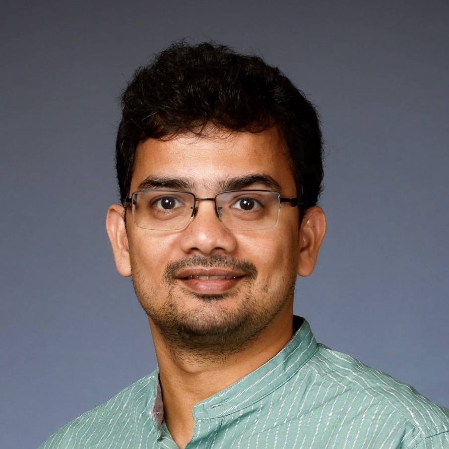

Call for papers
LLM4Cluster
Clustering is indispensable in many fields where data is unlabeled, aiming to group similar data points into meaningful clusters. Recent studies have shown that using the world knowledge in the Large Language Models (LLM) can significantly improve the clustering performance. Therefore, the primary goal of this workshop is to investigate how to harness the distinctive strengths and generalization abilities of LLM to address issues such as the vague cluster boundaries, the hard-to-set parameters, and the supervision signals for optimization encountered by conventional/deep clustering methods, and thus to promote the advancement of the clustering domain. The workshop will explore clustering methodologies and practices that extend beyond the specified data types, aiming to reveal the extensive potential of LLM across diverse application contexts.
Topics of interest
We welcome all papers that are related but not limited to the following topics:
Investigation into the reinforcement between LLM and clustering, e.g., low-rank adaptation of LLM by clustering and enhancing clustering stability using LLM
Novel approaches integrating LLM into classical/deep clustering methods
Interpretability of the clustering process leveraging LLM
Efficient clustering models for handling large-scale data
LLM-guided incremental clustering for dynamic data
Generalizable LLM-based clustering models for cross-domain data
Employing multi-modal LLM for multi-view/modal clustering
Leveraging LLM to supply external knowledge for few-shot clustering
Enabling LLM to understand topological information for graph clustering
Utilizing LLM to guide clustering with unknown parameters such as the subspace number and the cluster number
Establishing new benchmarks and evaluations for clustering assessment
Program
The workshop will be held on November 12th during ICDM 2025.
August 5th
Welcome and Opening Remarks
Towards Digital Twin-based Operation and Maintenance: A Virtual Assistant Framework for Creating Guidelines According to Managers’ Requirements
Sheng Bao and Hangdong Bu.
Digital Twin Orchestration: Framework and Smart City Applications
Do-Van Nguyen, Minh-Son Dao and Koji Zettsu
Coffee break
On-Edge Implemented Machine-Learning Based Synthetic Flame Detector For Gas Turbine Operation
Valentina Gori, Kanika Goyal, Tiziano Roma, Gianni Bagni, Riccardo Carta, Bruno Giunta, Giovanni De Magistris and Giovanni Tonno
Knowledge representation for neuro-symbolic digital building twin querying/span>
Stephane Reynaud, Anthony Dumas and Ana Roxin
Closing remarks
Lunch break
Free discussion & networking
Second coffee break
Important dates
Submission deadline: Aug 29,2025
Paper notification: Sep 15,2024
Camera-ready: Sep 25,2025
Workshop: Nov 12,2025
Submission
Papers can be submitted as PDF using EasyChair:
https://easychair.org/my/conference?conf=ai4dtcpPapers must comply with the CEURART paper style (1 column) and can fall in one of the following categories:
Full research papers(minimum 7 pages)
Short research papers(4-6 pages)
Position papers(2 pages)
The CEURART template can be found on Overleaf at:
https://it.overleaf.com/latex/templates/template-for-submissions-to-ceur-workshop-proceedings-ceur-ws-dot-org/wqyfdgftmcfwAccepted papers (after blind review of at least 3 experts) will be included in a volume of the CEUR Workshop Proceedings. We are also planning to organize a special issue and the authors of the most interesting and relevant papers will be invited to submit and extended manuscript.
At least one author of each accepted paper must travel to the ICDM venue in person
Multiple submission of the same paper to more ICDM workshops are forbidden
Organization
Workshop organizers

Wei Ye
Tongji University, China

Ye Zhu
Deakin University, Australia

Sourav Medya
University of Illinois at Chicago, USA
Xin Sun
City University of Macau, China
Benjamin Roth
University of Vienna, Austria

Christian Böhm
University of Vienna, Austria

Claudia Plant
University of Vienna, Austria
Program Committee Members
Rui Fan - Tongji University, China
Chunchun Chen - Tongji University, China
Xing Wei - Tongji University, China
Wengang Guo - Tongji University, China
Jiayi Yang - Tongji University, China
Chenrun Wang - Tongji University, China
Yue Niu - Tongji University, China
Yi Bin - Tongji University, China
Anna Beer - University of Vienna, Austria
Carolina Artria - University of Vienna, Austria
Andrii Shkabrii - University of Vienna, Austria